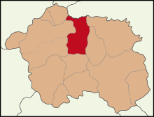

ALPU
Alpu, İç Anadolu Bölgesi’nde Eskişehir iline bağlı ilçe.
Türkiye'de yalnız Eskişehir ilinde çıkarılan lületaşı bu ilçeye bağlı eski adı Sepetçi Yeni adı Beyazaltın mahallesinden çıkarılmaktadır.

Coğrafi konum
Batısında il merkezi, kuzeybatısında Sarıcakaya, doğusunda Beylikova,
güneyinde Mahmudiye ilçeleri ile kuzeyinde
Ankara il sınırının çevrelediği Alpu Ovası üzerinde yer almaktadır.
Beylikova İlçesi Hakkında Bilgi Almak İçin Tıklayınız.